去接水
想着马上回来，手机还在桌上，忘了锁屏。戴着 Apple Watch 走开，DeskLock 检测到离开后会请求 Mac 锁屏。
接杯水、去洗手间、取打印件，或被同事叫去白板旁。离开也许只有几分钟，屏幕上的聊天、邮件和工作文件仍可能被看到。DeskLock 用你带着的 Apple Watch 或已配对的 iPhone 检测离开，由 Mac 执行系统锁屏。
免费下载 Mac 版macOS 14 或更新版本
iPhone 与 Apple Watch 伴侣正在准备上架。
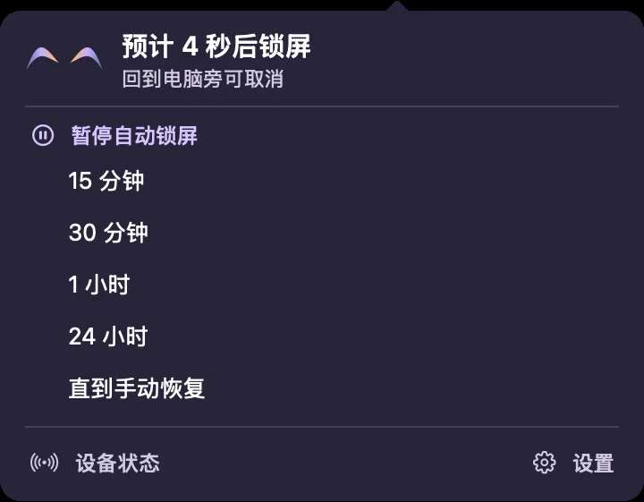
想着马上回来，手机还在桌上，忘了锁屏。戴着 Apple Watch 走开，DeskLock 检测到离开后会请求 Mac 锁屏。
几分钟不在座位，聊天窗口和邮件仍可能开着。把手机留在桌上，戴表离开即可参与自动检测。
半路遇到同事聊了几句，原本只离开一下变成几分钟。在 iPhone 的「我的 Mac」里看最近的锁屏记录。
临时讨论来不及收拾桌面。设置好的 Apple Watch 或 iPhone 被检测到离开时，DeskLock 可以自动锁屏。
电脑留在座位，戴表去开会，交给自动锁屏。若同一台 Mac 正在投屏，可从菜单栏暂停 15 分钟、30 分钟、1 小时或 24 小时，也可暂停到手动恢复。定时到期会自动恢复。
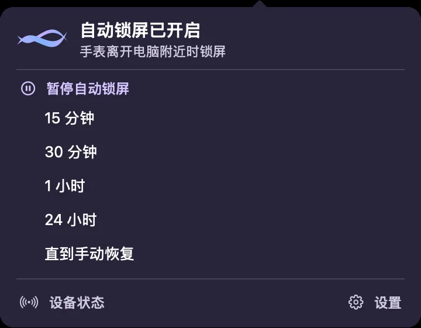
走开后发现屏幕还亮着？完成配对并开启自动锁屏后，可以在 iPhone 的「我的 Mac」或 Apple Watch 的 DeskLock 中点「锁定 Mac」。这一操作需要 iPhone 能通过本地网络连接 Mac，手表命令通过配对的 iPhone 转发。以锁屏记录中的「Mac 已锁屏」确认结果。通知显示在手机还是手表，由设备连接和系统通知设置决定。
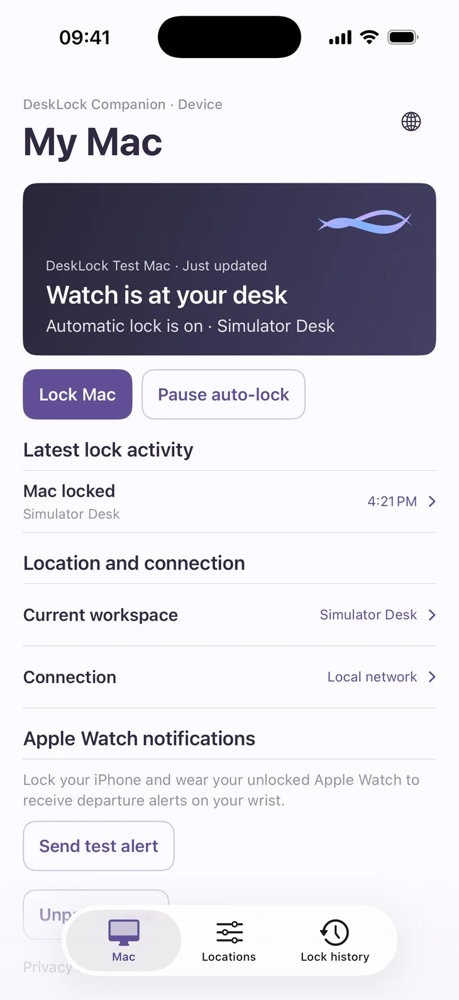
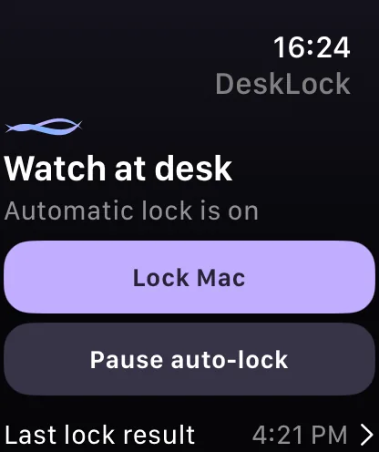
在 Mac 打开 DeskLock，允许蓝牙并选择你的 Apple Watch。到「锁屏」允许辅助功能权限，保存工作后完成一次实际锁屏验证，解锁并确认。确认后按默认范围开启自动锁屏。
配对时将 Mac 和 iPhone 接入同一局域网，允许本地网络访问，在手机上扫描 Mac 的配对码，并在 Mac 上允许配对。手表没收到提醒时，检查 iPhone 通知权限、手表连接和专注模式，再用「腕上提醒」中的测试通知验证。反馈请提供版本、系统、发生时间及当时是否还在桌边。联系 chengfei001001@gmail.com。
截图使用示例数据。蓝牙信号会随环境和佩戴姿势变化，可在 Mac 调整锁屏范围。部分截图采用英文界面。
隐私政策倒杯水、上洗手間、拿列印文件，或被同事叫去白板旁。就算只離開幾分鐘，螢幕上的訊息、郵件和工作檔案仍可能被看見。DeskLock 用你戴著的 Apple Watch 或已配對的 iPhone 偵測離開，並由 Mac 執行系統鎖定。
免費下載 Mac 版macOS 14 或更新版本
iPhone 與 Apple Watch 伴侶正在準備上架。
想著很快會回來，手機還在桌上，卻忘了鎖定。戴著 Apple Watch 走開，DeskLock 偵測到離開後會請 Mac 鎖定。
離開座位幾分鐘，聊天與郵件視窗仍可能開著。手機可以留在桌上，戴著手錶離開也能觸發偵測。
在路上遇到同事聊了幾句，原本只離開一下變成幾分鐘。可在 iPhone 的「我的 Mac」查看最近的鎖定記錄。
突然要討論，來不及收拾桌面。設定好的 Apple Watch 或 iPhone 被偵測到離開時，DeskLock 可以自動鎖定。
Mac 留在座位，戴錶去開會，交給自動鎖定。若同一台 Mac 正在投影，可從選單列暫停 15 分鐘、30 分鐘、1 小時或 24 小時，也可以暫停到手動恢復。定時結束後會自動恢復。
走開後發現螢幕還亮著？完成配對並開啟自動鎖定後，可在 iPhone 的「我的 Mac」或 Apple Watch 的 DeskLock 點「鎖定 Mac」。iPhone 必須能透過區域網路連上 Mac，手錶指令會經由配對的 iPhone 轉送。在鎖定記錄看到「Mac 已鎖定」就能確認結果。通知出現在手機或手錶，取決於裝置連線和系統通知設定。
在 Mac 開啟 DeskLock，允許藍牙存取並選取 Apple Watch。到「鎖定」授予輔助使用權限，儲存工作並驗證一次實際鎖定，然後解鎖並確認。確認後會以預設範圍啟用自動鎖定。
將 iPhone 和 Mac 連上同一個區域網路，允許區域網路存取，用 iPhone 掃描 Mac 顯示的配對碼，再於 Mac 允許配對。若手錶未收到提醒，請檢查 iPhone 通知權限、手錶連線與專注模式，再用腕上提醒的測試通知確認。回報時請附上 App 和系統版本、發生時間，以及當時是否在電腦旁。聯絡方式為 chengfei001001@gmail.com。
截圖使用範例資料。藍牙訊號會受環境與佩戴姿勢影響，可在 Mac 調整鎖定範圍。部分截圖採用英文介面。
隱私權政策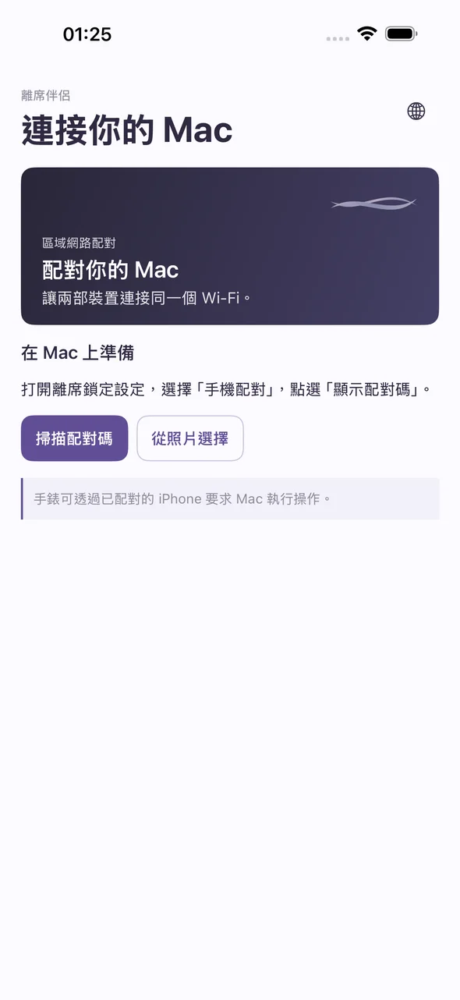
A water refill, a restroom break, or a quick question at the whiteboard can leave email and work on display. DeskLock uses your Apple Watch or paired iPhone to detect when you step away, then asks macOS to lock the screen.
Free download for MacmacOS 14 or later
The iPhone and Apple Watch companion apps are being prepared for the App Store.
You expect to be right back, and your phone stays on the desk. Wear your Apple Watch and let DeskLock lock your Mac when it detects you’ve walked away.
Even a few minutes away can leave a chat or email visible. Leave your iPhone on the desk and let your watch handle departure detection.
A quick trip to the printer can turn into a conversation. Check the latest lock in My Mac on your iPhone.
A coworker calls you over before you’ve had time to lock up. DeskLock can lock the Mac when it detects the configured watch or phone moving away.
When you go to a meeting room, leave auto-lock on. When presenting from the same Mac, pause auto-lock from the menu bar for 15 minutes, 30 minutes, 1 hour, 24 hours, or until you resume it. Timed pauses end automatically.
If you step away and find your Mac still unlocked, open My Mac on iPhone or DeskLock on Apple Watch and tap Lock Mac. First pair the devices and enable auto-lock. The iPhone needs to reach the Mac on the local network, and watch commands relay through the paired iPhone. Look for Mac locked in Lock History to confirm the result. Device connectivity and system settings determine where notifications appear.
Open DeskLock on the Mac, allow Bluetooth access and select your Apple Watch. In Locking, grant Accessibility access, save your work and verify that the Mac locks. Unlock the Mac and confirm the result to enable auto-lock with the default range.
For pairing, connect the Mac and iPhone to the same local network and grant local network access. Scan the pairing code on the iPhone and approve the request on the Mac. If a wrist alert is missing, check iPhone notification permission, watch connectivity and Focus settings, then send a wrist test alert. Include app and OS versions, the approximate time and whether you were still at the desk when you contact chengfei001001@gmail.com.
Screenshots use example data. Bluetooth readings vary with the room and how you wear the watch. You can adjust the range on your Mac. Some screenshots show the English or Chinese interface.
Privacy policy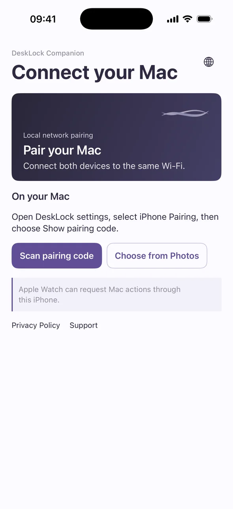
水を取りに行くとき、トイレに立つとき、同僚にホワイトボードへ呼ばれたとき。数分でも、メールや作業中の画面は見えるままです。DeskLockはApple Watchまたはペアリング済みのiPhoneで離席を検知し、macOSの画面をロックします。
Mac版を無料ダウンロードmacOS 14以降
iPhoneとApple WatchのアプリはApp Storeでの公開準備中です。
すぐ戻るつもりでiPhoneを机に置いたままでも、Apple Watchを着けて離れると、DeskLockが離席を検知してMacのロックを実行します。
数分の離席でもチャットやメールが見えることがあります。iPhoneを置いたまま、Apple Watchで離席を検知できます。
プリンターへの往復が立ち話で長引くことも。iPhoneの「マイMac」で直近のロック履歴を確認できます。
急にホワイトボードへ呼ばれたら、設定済みのApple WatchやiPhoneが離れたことを検知してMacをロックできます。
会議室に移動するときは自動ロックを有効にしたままに。同じMacで発表するときは、メニューバーで15分、30分、1時間、24時間、または手動再開まで一時停止できます。時間を指定すると自動で再開します。
席を離れてからMacがロックされていないと気づいたら、iPhoneの「マイMac」またはApple WatchのDeskLockで「Macをロック」をタップします。事前にペアリングして自動ロックを有効にしてください。iPhoneはローカルネットワークでMacに接続できる必要があり、Apple Watchの操作はペアリング済みのiPhoneを経由します。結果はロック履歴で確認できます。通知の表示先は接続状況とシステム設定によって変わります。
MacでDeskLockを開き、Bluetoothの利用を許可してApple Watchを選択します。ロック設定でアクセシビリティの利用を許可し、作業を保存してから画面ロックを確認してください。Macのロックを解除して結果を確認すると、標準の範囲で自動ロックが有効になります。
ペアリングするには、MacとiPhoneを同じローカルネットワークに接続してアクセスを許可し、iPhoneでQRコードを読み取り、Macでリクエストを承認します。腕に通知が届かない場合は、iPhoneの通知の許可、Apple Watchの接続、集中モードを確認し、テスト通知を送信してください。問い合わせには、アプリとOSのバージョン、発生時刻、Macのそばにいたかどうかを添えて chengfei001001@gmail.com にご連絡ください。
画面はサンプルデータです。Bluetoothの信号は周囲の環境やApple Watchの着け方で変化します。範囲はMacで調整できます。一部の画面は英語または中国語です。
プライバシーポリシー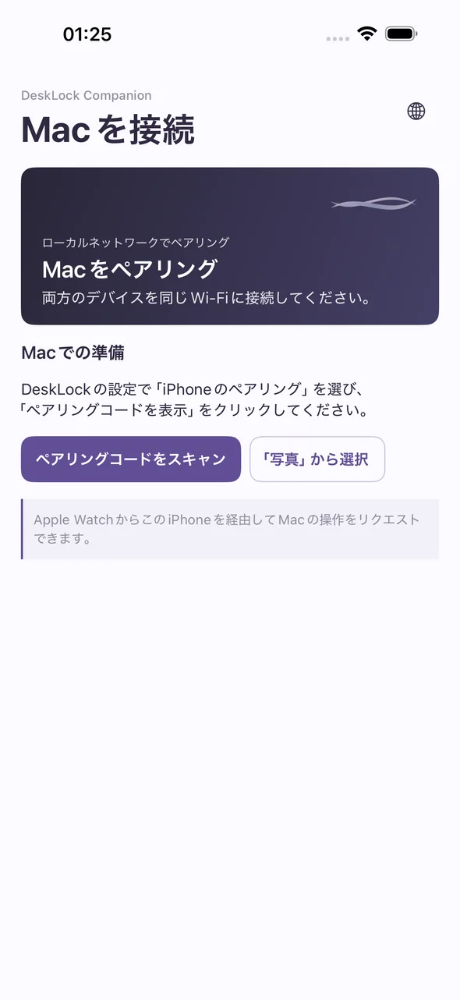
Kurz Wasser holen, zur Toilette gehen oder eine Frage am Whiteboard beantworten – dabei können E-Mails und Arbeitsdokumente sichtbar bleiben. DeskLock erkennt über deine Apple Watch oder ein gekoppeltes iPhone, wenn du weggehst, und veranlasst macOS, den Bildschirm zu sperren.
Kostenlos für Mac ladenmacOS 14 oder neuer
Die Apps für iPhone und Apple Watch werden für den App Store vorbereitet.
Du bist gleich wieder da, und das iPhone bleibt auf dem Tisch. Mit deiner Apple Watch kann DeskLock erkennen, dass du weggehst, und den Mac sperren.
Auch in wenigen Minuten können Chats und E-Mails sichtbar bleiben. Das iPhone kann am Platz bleiben, während die Watch zur Erkennung dient.
Am Drucker ergibt sich schnell ein Gespräch. Unter „Mein Mac“ kannst du auf dem iPhone die letzte Sperre nachsehen.
Ein Kollege ruft dich rüber, bevor du den Bildschirm sperren konntest. DeskLock kann den Mac sperren, sobald die eingerichtete Watch oder das iPhone sich entfernt.
Beim Gang in den Besprechungsraum bleibt die automatische Sperre aktiv. Wenn du am selben Mac präsentierst, kannst du sie in der Menüleiste für 15 oder 30 Minuten, 1 oder 24 Stunden oder bis zur manuellen Fortsetzung pausieren. Ein Timer setzt sie automatisch fort.
Ist der Mac nach dem Weggehen noch entsperrt, tippe auf dem iPhone unter „Mein Mac“ oder in DeskLock auf der Apple Watch auf „Mac sperren“. Kopple die Geräte vorher und aktiviere die automatische Sperre. Das iPhone muss den Mac im lokalen Netzwerk erreichen. Befehle der Watch laufen über das gekoppelte iPhone. Der Sperrverlauf zeigt das Ergebnis. Wo Mitteilungen erscheinen, hängt von der Geräteverbindung und den Systemeinstellungen ab.
Öffne DeskLock auf dem Mac, gestatte den Bluetooth-Zugriff und wähle deine Apple Watch aus. Erlaube unter „Bedienungshilfen“ den Zugriff, speichere deine Arbeit und prüfe, ob der Mac tatsächlich gesperrt wird. Entsperre ihn und bestätige das Ergebnis, um die automatische Sperre mit der Standardreichweite zu aktivieren.
Verbinde für die Kopplung Mac und iPhone mit demselben lokalen Netzwerk und erlaube den lokalen Netzwerkzugriff. Scanne den Code mit dem iPhone und bestätige die Anfrage auf dem Mac. Fehlt eine Mitteilung auf der Apple Watch, prüfe die Mitteilungsberechtigung, die Verbindung und den Fokusmodus und sende eine Testmitteilung. Nenne bei Fragen an chengfei001001@gmail.com die App- und Systemversionen, die ungefähre Uhrzeit und ob du noch am Schreibtisch warst.
Die Abbildungen verwenden Beispieldaten. Die Bluetooth-Signalstärke hängt vom Raum und der Position der Watch ab. Die Reichweite lässt sich am Mac einstellen. Einige Abbildungen zeigen die englische oder chinesische Oberfläche.
Datenschutz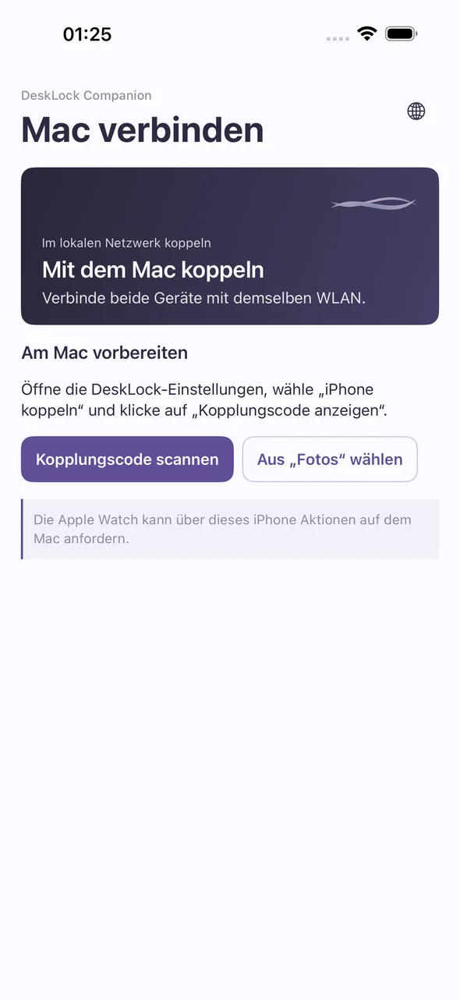
물을 뜨러 가거나, 화장실에 가거나, 동료가 화이트보드 앞으로 부를 때. 몇 분만 자리를 비워도 메일이나 업무 문서가 화면에 그대로 보일 수 있습니다. DeskLock은 Apple Watch 또는 페어링한 iPhone의 신호로 자리 비움을 감지하면 macOS에 화면 잠금을 요청합니다.
Mac용 무료 다운로드macOS 14 이상
iPhone 및 Apple Watch 앱은 App Store 출시를 준비 중입니다.
곧 돌아올 생각에 iPhone을 책상 위에 둔 채 잠그는 것을 잊기 쉽습니다. Apple Watch를 차고 나가면 DeskLock이 자리 비움을 감지해 Mac을 잠글 수 있습니다.
몇 분 사이에도 채팅이나 메일이 보일 수 있습니다. iPhone은 책상에 두고 Apple Watch로 자리 비움을 감지할 수 있습니다.
프린터에 잠시 가는 길에 대화가 길어질 수 있습니다. iPhone의 ‘나의 Mac’에서 최근 잠금 기록을 확인하세요.
갑자기 불려가 화면을 잠글 여유가 없을 때, 설정한 Apple Watch나 iPhone이 멀어지면 DeskLock이 Mac을 잠글 수 있습니다.
회의실로 이동할 때는 자동 잠금을 켜 두세요. 같은 Mac에서 발표할 때는 메뉴 막대에서 15분, 30분, 1시간, 24시간 또는 직접 재개할 때까지 일시 정지할 수 있습니다. 시간을 정하면 자동으로 재개됩니다.
자리를 비운 뒤 Mac이 아직 잠기지 않았으면 iPhone의 ‘나의 Mac’이나 Apple Watch용 DeskLock에서 ‘Mac 잠그기’를 누르세요. 먼저 기기를 페어링하고 자동 잠금을 켜야 합니다. iPhone은 로컬 네트워크에서 Mac에 연결할 수 있어야 하며 Apple Watch의 명령은 페어링한 iPhone을 거칩니다. 결과는 잠금 기록에서 확인하세요. 알림이 표시되는 기기는 연결 상태와 시스템 설정에 따라 달라집니다.
Mac에서 DeskLock을 열고 Bluetooth 사용을 허용한 다음 Apple Watch를 선택하세요. 손쉬운 사용 권한을 허용하고 작업을 저장한 뒤 화면이 실제로 잠기는지 확인하세요. Mac의 잠금을 해제하고 확인하면 기본 범위로 자동 잠금이 켜집니다.
페어링하려면 iPhone과 Mac을 같은 로컬 네트워크에 연결하고 접근을 허용하세요. iPhone에서 코드를 스캔하고 Mac에서 요청을 승인하세요. Apple Watch에 알림이 표시되지 않으면 iPhone 알림 권한과 시계 연결, 집중 모드를 확인한 뒤 테스트 알림을 보내 보세요. 문의할 때는 앱과 OS 버전, 발생 시각, 당시 Mac 근처에 있었는지를 적어 chengfei001001@gmail.com로 보내 주세요.
이미지에는 예시 데이터가 사용되었습니다. Bluetooth 신호는 주변 환경과 시계 위치에 따라 달라질 수 있으며 Mac에서 범위를 조정할 수 있습니다. 일부 화면은 영어 또는 중국어입니다.
개인정보 처리방침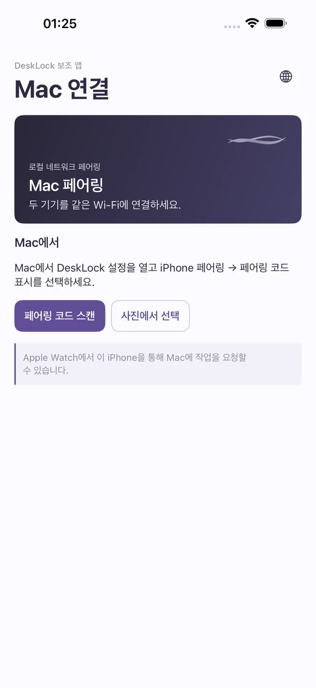
Cuando vas a por agua, al baño o a hablar con alguien en la pizarra, puedes dejar correos y documentos a la vista. DeskLock usa tu Apple Watch o iPhone enlazado para detectar que te alejas y pedir a macOS que bloquee la pantalla.
Descarga gratis para MacmacOS 14 o posterior
Las apps para iPhone y Apple Watch se están preparando para la App Store.
Crees que volverás enseguida y dejas el iPhone en la mesa. Si llevas el Apple Watch, DeskLock puede detectar que te alejas y bloquear el Mac.
Bastan unos minutos para que una conversación o un correo quede a la vista. Puedes dejar el iPhone en la mesa y usar el reloj para detectar que te has alejado.
Un momento en la impresora puede convertirse en una charla. Consulta el último bloqueo desde «Mi Mac» en el iPhone.
Un compañero te llama y no te da tiempo a bloquear la pantalla. DeskLock puede bloquear el Mac al detectar que se aleja el reloj o el iPhone configurado.
Cuando te vayas a la sala de reuniones, deja activo el bloqueo automático. Si vas a presentar con ese mismo Mac, puedes pausarlo desde la barra de menús durante 15 o 30 minutos, 1 o 24 horas, o hasta reanudarlo manualmente. Las pausas con tiempo se reanudan solas.
Si te alejas y el Mac sigue desbloqueado, pulsa «Bloquear el Mac» en «Mi Mac» en el iPhone o en DeskLock para el Apple Watch. Antes debes enlazar los dispositivos y activar el bloqueo automático. El iPhone debe poder comunicarse con el Mac en la red local. Las órdenes del reloj pasan por el iPhone enlazado. Consulta el historial de bloqueos para confirmar el resultado. La conexión y los ajustes del sistema determinan dónde aparece el aviso.
Abre DeskLock en el Mac, permite el acceso a Bluetooth y selecciona tu Apple Watch. Concede el permiso de Accesibilidad, guarda el trabajo y comprueba que el Mac se bloquea. Desbloquéalo y confirma el resultado para activar el bloqueo automático con el alcance predeterminado.
Conecta el iPhone y el Mac a la misma red local y permite el acceso. Escanea el código con el iPhone y aprueba la solicitud en el Mac. Si el reloj no muestra el aviso, revisa los permisos de notificaciones del iPhone, la conexión del reloj y el modo de concentración. Envía un aviso de prueba. Si escribes a chengfei001001@gmail.com, indica las versiones de la aplicación y del sistema, la hora aproximada y si seguías junto al Mac.
Las capturas muestran datos de ejemplo. La señal Bluetooth varía con el entorno y la posición del reloj. Puedes ajustar el alcance desde el Mac. Algunas capturas muestran la interfaz en inglés o chino.
Política de privacidad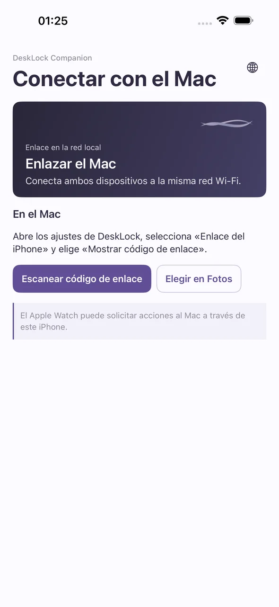
Ir por agua, ir al baño o atender una pregunta en el pizarrón puede dejar correos y documentos a la vista. DeskLock usa tu Apple Watch o tu iPhone vinculado para detectar que te alejaste y pedirle a macOS que bloquee la pantalla.
Descarga gratis para MacmacOS 14 o posterior
Las apps para iPhone y Apple Watch se están preparando para la App Store.
Piensas volver rápido y dejas el iPhone en el escritorio. Si llevas puesto el Apple Watch, DeskLock puede detectar que te alejas y bloquear tu Mac.
Aunque solo te ausentes unos minutos, los mensajes y correos pueden quedar a la vista. Deja el iPhone en el escritorio y usa el reloj para detectar tu salida.
Una vuelta rápida a la impresora puede terminar en una plática. Revisa el último bloqueo en «Mi Mac», desde el iPhone.
Un compañero te llama y te levantas sin bloquear la pantalla. DeskLock puede bloquear tu Mac cuando detecta que se aleja el reloj o el iPhone que configuraste.
Si vas a la sala de juntas, deja activado el bloqueo automático. Si vas a presentar desde esa misma Mac, puedes pausarlo en la barra de menús durante 15 o 30 minutos, 1 o 24 horas, o hasta reanudarlo tú. Las pausas programadas terminan automáticamente.
Si ya te alejaste y ves que tu Mac sigue desbloqueada, toca «Bloquear la Mac» en «Mi Mac» en el iPhone o en DeskLock para Apple Watch. Primero vincula tus dispositivos y activa el bloqueo automático. El iPhone debe poder conectarse con tu Mac por la red local. Los comandos del reloj se envían por medio del iPhone vinculado. Consulta el historial para confirmar el bloqueo. La conexión y la configuración del sistema determinan dónde aparece la notificación.
Abre DeskLock en tu Mac, permite el acceso a Bluetooth y selecciona tu Apple Watch. Otorga el permiso de Accesibilidad, guarda tu trabajo y confirma que la Mac se bloquea. Desbloquéala y confirma el resultado para activar el bloqueo automático con el alcance predeterminado.
Para vincular los dispositivos, conecta el iPhone y tu Mac a la misma red local y permite el acceso. Escanea el código con el iPhone y acepta la solicitud en tu Mac. Si no ves la notificación en el reloj, revisa los permisos del iPhone, la conexión del reloj y el modo de concentración. Después envía una notificación de prueba. Si necesitas ayuda, escribe a chengfei001001@gmail.com e incluye las versiones de la app y del sistema, la hora aproximada y si todavía estabas junto a la Mac.
Las capturas muestran datos de ejemplo. La señal de Bluetooth cambia según el entorno y la posición del reloj. Puedes ajustar el alcance en tu Mac. Algunas capturas muestran la interfaz en inglés o chino.
Aviso de privacidad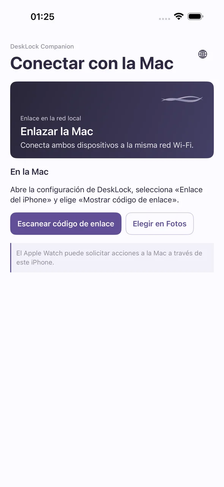